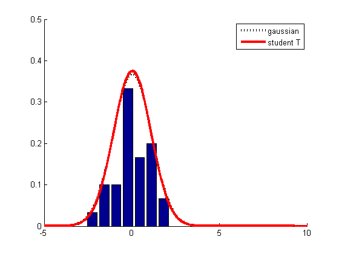
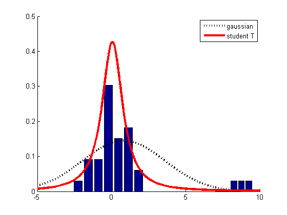

% Illustrate the robustness of the t-distribution compared to the Gaussian. % Written by Matthew Dunham function gaussVsStudentOutlierDemo()
warning('off','stats:tlsfit:IterOrEvalLimit'); n = 30; seed = 8; randn('state',seed); data = randn(n,1); outliers = [8 ; 8.75 ; 9.5]; nn = length(outliers); nbins = 7; figure; plotHist(data,nbins,n); plotPDFs(data); printPmtkFigure('gaussVsT') figure; plotHist(data,nbins,n+nn); plotHist(outliers,nn,n+nn); plotPDFs([data ; outliers]); printPmtkFigure('gaussVsToutlier') 
Bucket the data into nbins, divide the size of each bin by norm and plot the normalized histogram.
function plotHist(data,nbins,norm) hold on; [counts, locations] = hist(data,nbins); sCounts = counts ./ norm; bar(locations,sCounts); end
function plotPDFs(data) Xbar = mean(data); sigma = std(data); gauss = @(X)normpdf(X,Xbar,sigma); %MLEs = mle(data,'distribution','tlocationscale'); %stats toolbox %mu = MLEs(1); sigma = MLEs(2); dof = MLEs(3) % use pmtk's EM algorithm model = studentFitEm(data); sT = @(X)exp(studentLogprob(model, X)); hold on; x = (-5:0.01:10)'; h(1) = plot(x,gauss(x),'k:','LineWidth',3); h(2) = plot(x,sT(x),'r-','LineWidth',3); axis([-5,10,0,0.5]); set(gca,'YTick',0:0.1:0.5); if isOctave(), legend('gaussian', 'student T') else legend(h, 'gaussian', 'student T') end end
end